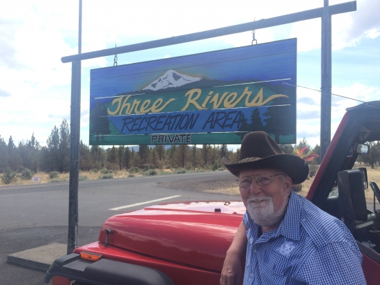

|
|
|

Three Rivers is a gated community in Central Oregon, just West of Cove Palisades Park. I bought property there in 1968 and built a cabin, It was a family project with help from many, many friends. It now belongs to my daughter. I began writing this series of articles about the history of the area for the Three Rivers Newsletter, and for my daughter. |
|
Enjoy the following essays
John C. Fremont, Kit Carson, and Billy Chinook---In 1843, the U.S. War Department sent John C. Fremont on a map making expedition to get ready for the homesteaders who would be coming out on the new Oregon Trail. He enlisted a little known fur trapper, Kit Carson, as a guide.
The Story of Billy Chinook---Fremont lavished praise on Billy Chinook, awarding him a medal recognition of his service to the surveying expedition. Billy Chinook, also known as William Parker, died in 1890. Lake Billy Chinook, created in 1964 with the construction of the Round Butte Dam, is named for this celebrated Native leader.
Bootleggers of the Metolius "During Prohibition, the Oregon Outback became the principal source of bootleg whiskey on the West Coast,” according to Prineville historian David Braly. Central Oregon became a moonshine capital and the Metolius region was a popular location where its wide open spaces and tight-knit community made busting bootleggers difficult.
The Second Oregon Trail The Meek's Cutoff--There were sixteen official Oregon Trails, with the Columbia River route being the most famous. One of the more notorious trails came to be called the Meek's Cutoff and passed just east of present day Madras.
Finding Hope-A Homesteader's Story A century ago the Revised Homestead Act brought more settlers to Grandview. The Nance family took 40 acres adjoining Three Rivers on the west and a mile North of Graham Road. On September 5, 1917, Hope Nance was born.
The Ill-Fated Cattle Drive of 1880 In the 1870's John Todd built up his herd to over 2,000 head in the Squaw Creek Flats. Joseph Teal and his brother-in-law Henry Coleman combined their stock with John Todd and consignments from other ranchers and Todd took the lead on driving between 3,000 and 6,000 head of cattle on a 1,200 mile drive to Cheyenne. It would go down in history as one of the longest of all drives of pioneer times
No Water for Grandvew Rainfall in Grandview was plentiful a hundred years ago. Fields of rye, wheat, timothy, clover and alfalfa grew and the homesteader's gardens yielded potatoes, watermelon, corn, tomatoes and lettuce. in 1916 he pland was to bring water to Grandview and create the Suttle Lake Irrigation District of Grandview.
Cove Palisades Park In 1879 Clark Rogers became he first settler along the Deschutes River and in 1886 received his homestead claim, signed by President Cleveland. When Round Butte Dam was built in 1964 the canyons were flooded, creating Lake Billy Chinook, and the campground was moved up to its present location.
The Story of Harry Heising Harry Heising, his brother Dorsey and their mother arrived in Shaniko some time in Septerber of 1902. Over the next years Harry became one of the three biggest ranchers in the area, bought the River Ranch from Nick and added to it until he owned 6,000 acres. This was on the point between the Metolius and Deschutes rivers and he named it the Three Rivers Ranch. Who Shot Ya? In 1904 Agusta “Gussie” Fullerton, at age 21, filed in her name for the Squaw Flat Ranch. She was remembered as a “Short woman in a man's hat and clothes, plaid shirt, jeans and high-top laced boots, pale features, and big bright eyes” who laughed a lot. In 1911 she married William Henry McNarey of Prineville, who was described as a notoriously violent man. On April 6, 1924, he came after her with a club, and Gussie went for her .38 Colt revolver.
|